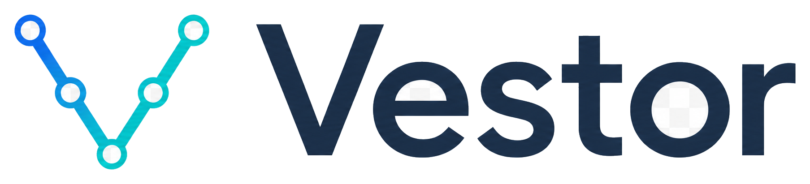
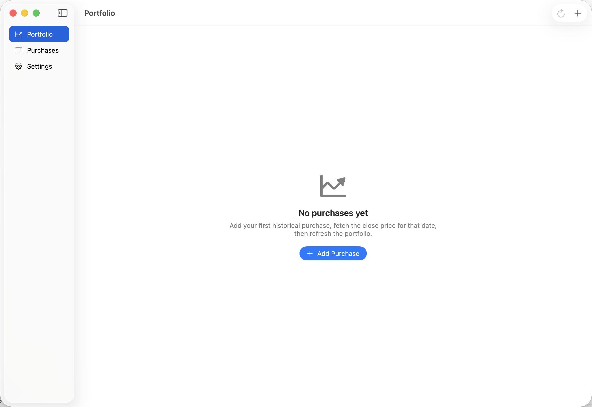
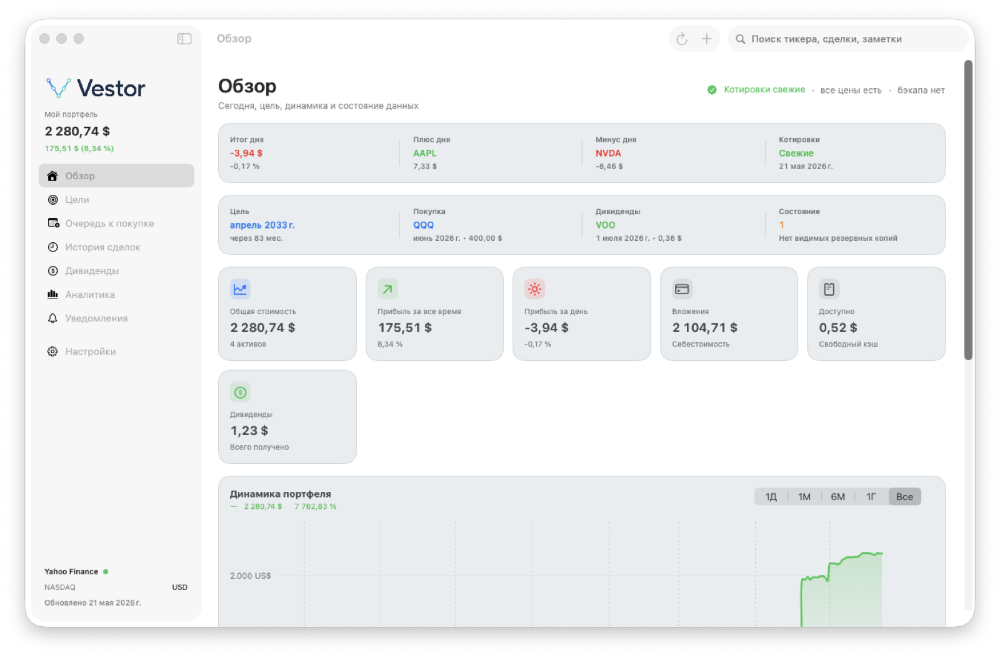
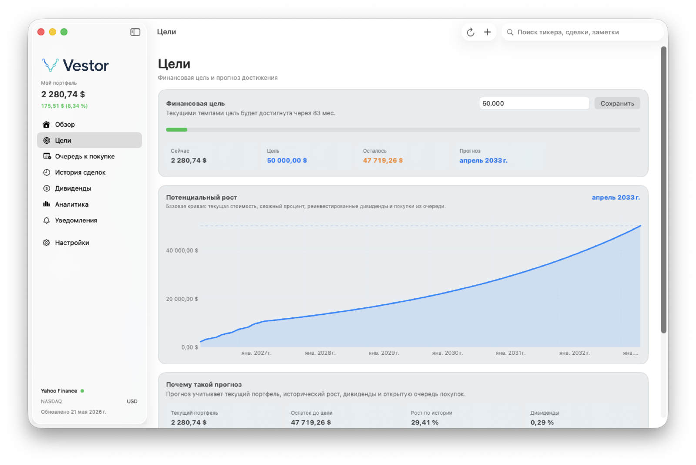
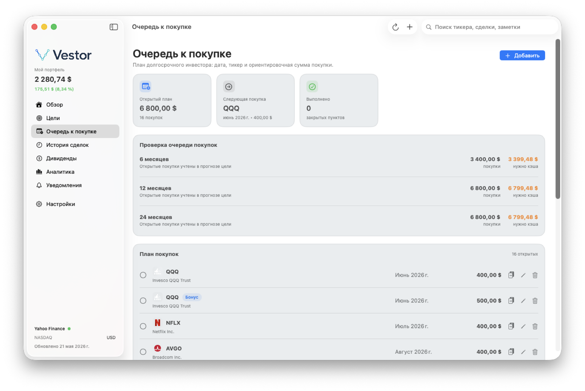
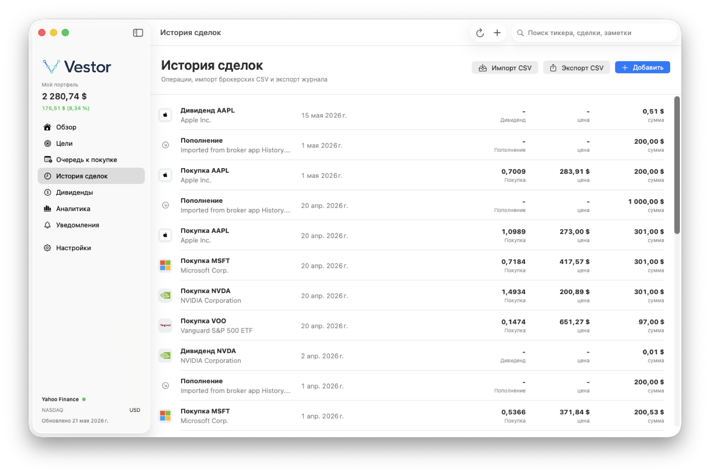
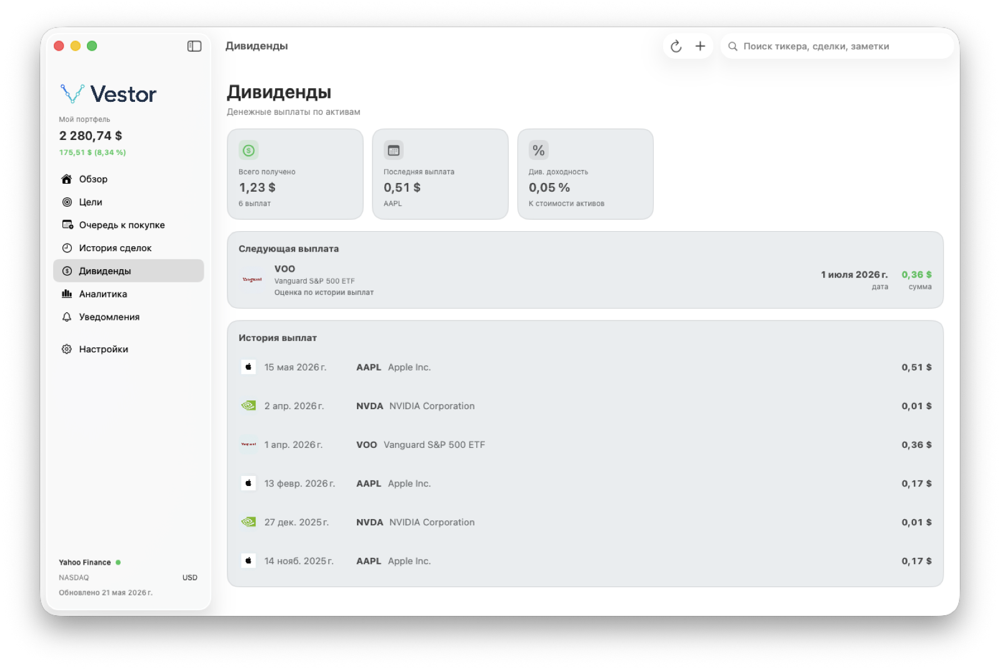
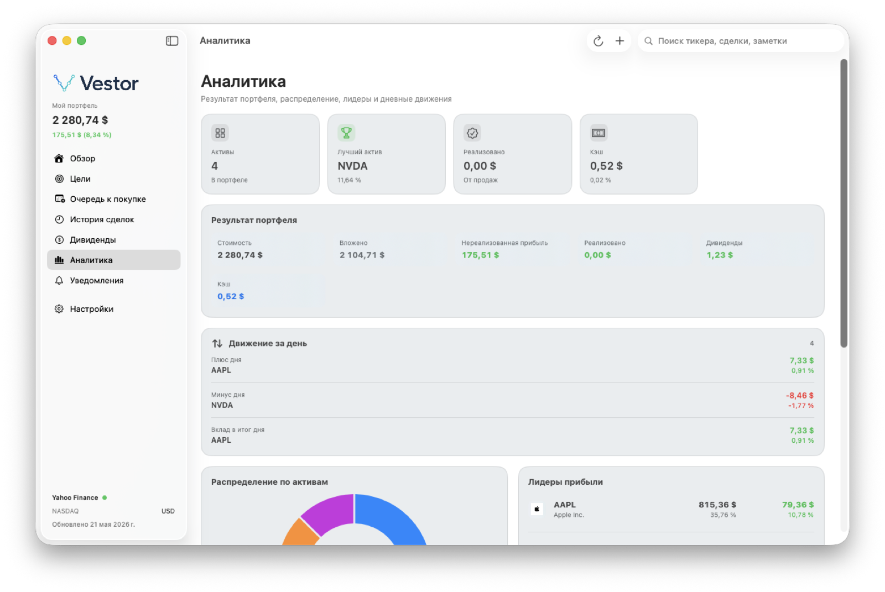
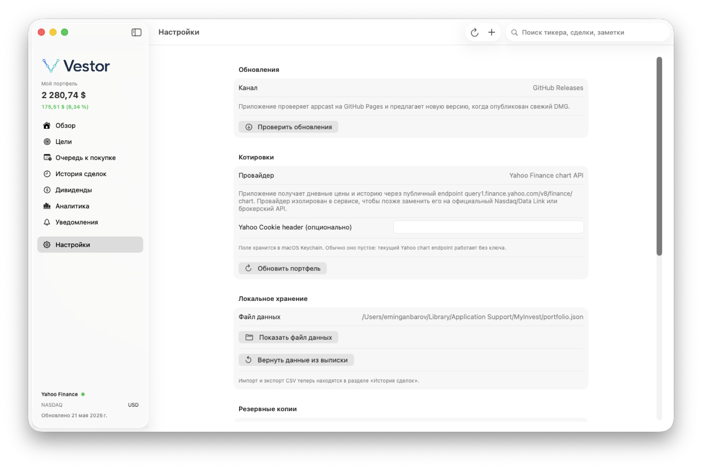

Portfolio overview
Track market value, cash, day movement, gain/loss, dividends, and data health from one dense dashboard.

macOS portfolio tracker
Local-first portfolio tracking, goal projection, planned purchases, dividends, and market refreshes in one focused Mac app.
First builds are unsigned QA DMGs. macOS may require Control-click, then Open.

Track market value, cash, day movement, gain/loss, dividends, and data health from one dense dashboard.
Project progress from current value, growth, dividend yield, and the planned purchase queue.
Portfolio files, backups, import presets, and optional provider cookies stay on your Mac.
Real app screens






